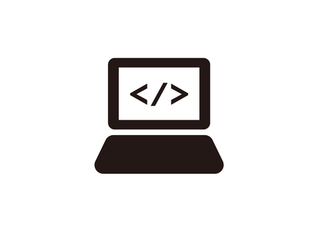
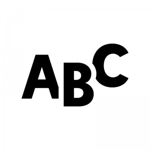

USEFUL
WEBSITE
INFORMATION SCIENCE
数学
行列計算機
行列に関連する様々な計算を行ってくれるサイトです。過程も含めて記述してくれます。
後述のWolframAlphaも便利ですが、行列に関してはこちらの方が使いやすいかと思います。
某講義で解答が配布されず困っている方も多いかと思いますが、これを使えば理解できるはずです。
WolframAlpha
微積分や線形代数などの数学に関するものは勿論、物理や化学などの分野も含め世の中の様々な計算を行ってくれるサイトです。
過程の記述は有料版のみですが、検算には十分使えます。
GeoGebra
関数を入力するとグラフを描画してくれるサイトです。視覚的に捉えることで、より理解を深めることが出来ます。
極値や交点の値も計算してくれます。
Mathpedia
大学数学全般に対して、基礎的な事項の解説がなされています。
内容は少し難しめで未完成の部分も多いのですが、大学数学の大まかな全体像を捉えるのには良いかと思います。
KIT数学ナビゲーション
高校数学と学部1・2年レベルの大学数学範囲における、基礎的な用語や公式が見やすくまとめられています。
わからないことが出てきた時に辞書的な使い方をするのがオススメです。
高校数学の美しい物語
主に高校数学の範囲で、基本公式の確認から数学オリンピックレベルの問題の解説に至るまで、様々なトピックが独立した記事になっています。
勿論普段の学習にも使えますが、どちらかと言えば知的好奇心を満たしたい方向けのサイトです。
プログラミング

Processing公式リファレンス
Processingの公式リファレンスです。Processingの標準機能や公式のライブラリなどが掲載されています。
英語ですが、翻訳すれば活用できると思います。
typing.run
明治大学総合数理学部先端メディアサイエンス学科の春学期プログラミング演習1で使用されたサイトです。
Processingのコードを写経タイピングすることができます。タイピング速度やタイポ率が表示されます。
明大生ではないため、一部の機能に制限がありますが、寿司打のように楽しめると思います。
MDN web docs
このサイトは、Firefoxを開発したMozillaが公開している、開発者向けのサイトです。
web技術に関して調べたい場合は、まずこのサイトを参照することで正しい情報を得ることができます。
Python言語リファレンス
Pythonの公式リファレンスです。
1年生の授業では、Pythonは学習しませんが、2年次以降はお世話になるかもしれません。
苦しんで覚えるC言語
実践プログラミングの参考書にも指定されているサイトです。体系的にC言語を学ぶことができます。
C++入門 AtCoder Programming Guide for beginners(APG4b)
競技プログラミングで有名なAtCoder社が提供している無料のプログラミング入門教材です。
AtCoderを始めたいけど何をしたらいいのかわからない！という人におすすめの教材です。
C++について深く学ぶというよりは、基礎プロで扱った内容+αをC++で学習するというのがイメージしやすいと思います。
英語

Deepl
ディープラーニングを利用したテキスト翻訳サービスです。英語や日本語だけでなく、様々な言語間での翻訳が可能です。
翻訳の精度は類似サービスと比べて高く、非常に使い勝手が良いです。
しかし、まだまだ完璧ではなく頻繁に誤訳も発生するので、最終的には自分でチェックするのが肝心です。
Speach to Text
入力された音声を認識し、それをテキストに書き起こしてくれるサービスです。
翻訳は勿論のこと、文書作成や発音練習などにも使えます。
Grammarly
英文の文法をチェックしてくれるツールです。
直接サイトにアクセスしての利用もできますが、ブラウザの拡張機能としてインストールしておくとテキスト入力時にリアルタイムでチェックを行ってくれます。
英単語カウンター
英文の語数を数えてくれるツールです。
英作文の課題で最後に語数を記載しなければならない時などに便利だと思います。
情報処理入門
IPA公式サイト
基本情報技術者試験などを主催しているIPAの公式サイトです。
諸々の試験についての概要を確認したり、申し込みを行ったり出来ます。
基本情報技術者試験ドットコム
基本情報技術者試験の過去問がまとめられているサイトです。
参考書等で各分野の基礎事項を軽く頭に入れたあとは、ここでどんどん問題演習をこなすのが良いかと思います。
OSAWA Lab
大澤先生が担当する講義の動画はこのサイトから配信されます。
他学年の講義も自由に見られる仕様になっているので、興味があれば覗いてみるのも良いでしょう。
レポート
剽窃チェッカー
入力された文章に対して、ウェブ上に同一の文字列がないかチェックするツールです。
偶然一致してしまうということもあり得ますし、せっかくの努力を無駄にしないためにもこれを使って確認しましょう。
文字数カウント
テキストボックスに入力した文章の文字数をカウントしてくれるツールです。
リアルタイムでカウントしてくれる機能もついているので使い勝手がよく、字数制限のあるレポートなどの作成時に便利です。
日本語ライティングの世界
主にライティングの技術についてまとめられているサイトです。
日本語ライティングだけでなく、英語ライティングやプレゼンテーションに関しても学ぶことが出来ます。
情報科学科
大澤研究室HP
大澤先生の研究室では、ドラえもんの開発はもちろんのこと、AI、ML(機械学習)をはじめとしたさまざまな分野を研究しています。
尾崎研究室HP
尾崎先生の研究室では、「データマイニング手法の開発 & 応用領域の開拓」というテーマで研究を行っています。
データマイニングとは、大量のデータから、価値のある情報を発掘し、ビッグデータやデータサイエンス、機械学習、人口知能とも密接な関係にある分野です。
尾上研究室
尾上先生の研究室では、情報可視化とデータサイエンスを中心に研究をしています。
韓研究室
北原研究室HP
斎藤研究室HP
谷研究室HP
古市研究室HP
宮田研究室HP
森山研究室HP
情報科学科公式HP
情報科学科公式Twitter